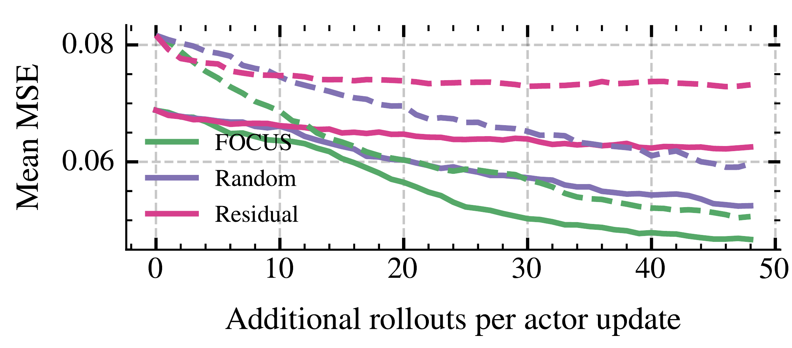

FOCUS: Active Critic Learning for Long-Horizon Language Model Agents
A correct answer can hide a wrong turn
Consider a research question: which town houses the museum founded by a particular author? A search turns up the author’s birthplace, and the agent follows that lead. Reading the museum’s history reveals that it opened elsewhere. The agent checks the museum’s address and finds the answer.
- 1Locate a museum
Search for the author who founded it.
- 2 · DetourFollow the birthplace
The agent mistakes a biographical detail for the museum’s location.
- 3 · RecoveryRead the museum history
The source places the museum in another town.
- 4Verify the address
The agent checks the location and submits its answer.
This illustrative search uses the same actions as our BrowseComp-Plus tutorial: search for documents, open a result, and find a passage. The tutorial builds a runnable agent over the benchmark corpus.
The run earns a reward of 1, but its decisions deserve different credit. We want to encourage checking the museum’s history and discourage treating the author’s birthplace as the answer. The final reward alone does not tell us which was which.
This is the credit-assignment problem. As tasks grow longer, one final outcome has to guide learning across many searches, tool calls, and revisions. To learn from those decisions, we need to estimate how the agent’s prospects changed along the way.
A step-wise critic gives us an estimate of those prospects. It predicts a state value: the expected remaining return when the acting policy continues from that state. With a binary terminal reward and no discounting, that value is the probability of eventual success. Comparing values before and after a segment gives us a way to recognize progress.
Intuitively, better value estimates give us better learning signals. FOCUS improves those estimates by resuming the agent from selected intermediate states and observing what happens.
Try continuing from the same point
Return to the moment when the agent is investigating the author’s birthplace. Save its context, environment, and browser state, then let the same policy continue several times. It may find the museum’s history on one attempt and keep following the wrong location on another. These outcomes give us evidence about the chance of success from that state.
Suppose the critic predicts a value of 0.8. We collect two continuations: one fails and one succeeds. Their average return is 0.5. We can combine this evidence with the original prediction, giving the critic the weight of one observation:
The estimate moves toward the observed outcomes. As more continuations arrive, their evidence receives more weight. Move the sliders to change the number of failures and successes. Each branch in this example ends immediately with reward 0 or 1; and .
2 direct continuations · each ends immediately
The critic trains toward 0.50. Actor advantages use the refined value 0.60.
The example produces two useful quantities. The critic target teaches the critic what the continuations revealed. The refined value combines that evidence with the critic’s prediction and helps assign credit to the acting policy. Keeping these roles separate lets us improve the current training signals while teaching the critic to make better predictions next time.
Choose where another rollout is useful
We could repeat this experiment at every checkpoint, but a continuation on a long task can require many generations and tool calls. With a limited budget, we need to choose where that work will teach us the most.
Consider two checkpoints. At one, the critic’s prediction agrees with many observed outcomes. At the other, the critic predicts success but the first few continuations have failed. The second deserves a closer look. How much more evidence to collect depends on the disagreement, the variability of the outcomes, and the evidence already available.
FOCUS uses those quantities to estimate how much another continuation would reduce value-estimation error. It allocates the next rollout to the candidate with the greatest estimated benefit. The formal objective is the marginal reduction in mean squared value-estimation error. Pending continuations count toward the decision too, so concurrent workers account for evidence already on its way.
This is active critic learning: choosing where to collect feedback that improves value estimates. The policy and critic stay fixed during collection, then learn from the resulting data.
Each rollout therefore helps twice. Its outcome improves credit assignment in the current tree and trains the critic to make better predictions in future rounds.
Watch how the methods assign credit
Section titled “Watch how the methods assign credit”The animation follows another agent through a detour and recovery, this time while comparing two models. Watch where each method collects extra samples and how it assigns credit to the same successful trajectory.

Give the recovery its own learning signal
Return to the agent that found the museum’s actual location. Suppose a segment changes its refined value from 0.4 to 0.6 and earns no immediate reward. With no discounting, the segment gets an advantage of . A segment that moves the estimate in the other direction gets .
The agent’s expected remaining return rises from 0.40 to 0.60.
The agent’s expected remaining return falls from 0.60 to 0.40.
In this example, the recovery earns a positive learning signal even though it follows an unhelpful detour. The segment advantage combines its reward with the change in estimated remaining return:
Here is the segment’s reward, and are its starting and ending states, and counts task transitions. The factor discounts the successor’s value. This temporal-difference residual is the advantage used in the experiments, which set and .
The policy update uses this advantage for the segment’s generated actions, including context-management tokens. Environment observations and conditioning text are masked from actor loss. The critic learns from the fixed continuation-based targets at expanded nonterminal states.
Real continuations can contain many segments. As we branch from intermediate checkpoints, they form a rollout tree: nodes hold resumable states, and edges hold the actions and environment transitions between them. Evidence from later states travels backward through this tree, one level at a time.
Backup details
For a state with direct children , average each child’s segment reward and discounted refined value:
Then combine that target with the critic prediction:
The count is the number of direct children, and sets the critic’s pseudo-observation weight; the experiments use . A terminal node has remaining value zero. An unexplored nonterminal node uses its critic prediction . Working upward from the leaves lets each child’s evidence inform its parent.
Selection keeps a separate record of directly observed continuation returns. A continuation contributes one observation at its starting node and each new node it visits. Later branching from a descendant adds evidence there; its strict ancestors keep their existing selection counts. The paper denotes these outcome counts by , and direct-child counts by .
For long tasks that use tools, a summary gives the agent a shorter account of its work while preserving its task and workspace state. One intuitive option is to branch directly at these compaction boundaries. However, context management is modular: the same collection workflow can retain the transcript with AppendOnly() or have the agent summarize it with Summarize(...). BrowseComp-Plus builds an agent that summarizes evidence and branches from compaction checkpoints.
Put the pieces together
Within a collection round, new outcomes change where FOCUS samples next. Once collection finishes, the tree supplies the targets for learning. Updating both models closes the loop: the next round starts with the updated policy and critic.

Getting to know the library maps this loop to the Python components, from the agent that resumes a state to the records consumed by your trainer.
Does choosing the evidence help?
We can test the allocation rule by comparing value estimates at the same rollout budget. The diagnostic below uses DeonticBench audit trees and starts from imperfect critics. It measures error against reference values estimated from 16 MCTS continuations.

FOCUS reaches lower error as the budget grows. The choice of where to continue affects how much the critic learns from a given rollout budget.
In the training experiments, FOCUS also improves held-out accuracy on deep search, legal reasoning, and code localization after one epoch at matched per-step generation budgets. The benchmark results are below.
Benchmark results with Qwen3.5-9B
Section titled “Benchmark results with Qwen3.5-9B”- GRPO48.2%
- VinePPO46.6%
- FOCUS55.4%
- GRPO52.4%
- VinePPO49.4%
- FOCUS56.5%
- GRPO70.1%
- VinePPO67.8%
- FOCUS72.4%
BrowseComp-Plus uses each method’s best held-out checkpoint over training. LocBench File@1 measures whether the top-ranked file is correct. The paper reports checkpoint details and paired bootstrap intervals. These comparisons measure accuracy at matched generation budgets; total training cost also includes critic scoring, model updates, and execution overhead.
Try it on a small task
Start by building a MATH rollout harness: generate a partial solution, save its state, and try two continuations. The quick start includes a scripted mode so you can inspect the branches before connecting a model. The training walkthroughs then use selective collection and value refinement to turn those continuations into learning signals.
Release and citation
Section titled “Release and citation”FOCUS: Active Critic Learning for Long-Horizon Language Model Agents
Zhengping Jiang, William Jurayj, Liaoyaqi Wang, Chunsheng Zuo, Anqi Liu, and Benjamin Van Durme
Johns Hopkins University
Read the paper on arXiv and find the code at zipJiang/FOCUS.
Cite the paper with this entry: